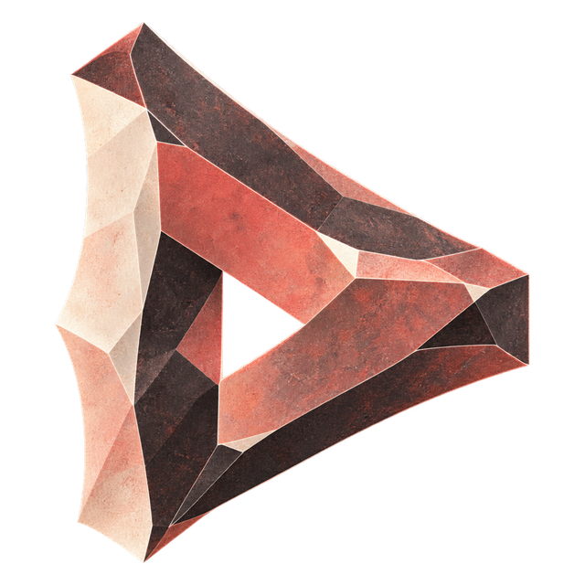

enter-once
The challenge
Quartierzentrum Union (Basel) runs its public activity programme from a single Outlook calendar. Every event — from the centre itself, the bistro partner, or a cooperation partner — is booked as a room reservation there. Two websites must show this programme:
union-basel.ch
Webflow — events reach the site via an Elfsight calendar widget fed through a Google Calendar detour (Outlook → Google → Elfsight). The Webflow site itself stores no events.
Verband Quartiertreffpunkt Basel
WordPress — a custom-built event tool, filled in manually, one event at a time. No ICS import, no automatic calendar reads.
Result: every event is captured a second time by hand —
The solution
Outlook stays the single source of truth. The sync
(union_sync.py) reads the calendar, keeps only explicitly public events, and
materialises them — one record per concrete date for recurring series — into the format the
target platforms consume:
1 · Read
ICS source of truth — the published Outlook test calendar or the local sample
(union-beispielkalender.ics), parsed with icalendar.
2 · Filter
Publish only explicitly public events. Cancelled, internal
(Intern / PRIVATE) and unmarked events never leave the calendar.
3 · Expand
Recurring series via dateutil.rrule (WEEKLY, UNTIL, COUNT,
BYDAY), honouring EXDATE skips and RECURRENCE-ID moved dates.
4 · Publish
One record per concrete date — start/end, room, categories, tags, image — as
--json or readable output, plus a sync state file for deletion handling.
Outlook calendar (ICS)
│
▼
union_sync.py
├─ parse VEVENTs ......... icalendar
├─ filter ................ public only
├─ expand recurrences .... dateutil.rrule
├─ apply overrides ....... EXDATE · RECURRENCE-ID
└─ emit records .......... start / end / room / categories / tags / image
│
▼
JSON records + sync state ──▶ Webflow CMS · WordPress event toolWhat the sync guarantees:
- Cancelled events disappear.
- Internal room bookings (staff-only) never leave the calendar.
- Moved dates (
RECURRENCE-ID) replace the original occurrence. - Skipped dates (
EXDATE) are not published. - Recurring series become individual events (WordPress-style: one per date).
Get started
Requirements: Python 3.12+ and uv. Clone the project, then:
# 1. install dependencies
uv sync
# 2. run the sync on the sample calendar
uv run union_sync.py --ics union-kit_kalender-cms-anleitung/union-beispielkalender.ics
# 3. or use the one-shot demo
./demo.sh
# JSON records for the website pipeline
uv run union_sync.py --json
# sync against the real Outlook test calendar
uv run union_sync.py --calendar "https://outlook.office365.com/owa/calendar/…/calendar.ics"Where to look in the repository:
- README.md — challenge, sprint, solution, production notes
- AGENTS.md — architecture and data contract for further development
- union_sync.py — the sync prototype
- demo_output.txt — verified sample output
Production checklist
- Source: the real Outlook ICS URL (or Microsoft Graph API for authenticated, reliable access) instead of the local sample file.
- Webflow: push events into the Webflow CMS via the CMS API (or replace the Elfsight widget with a custom event list fed by the sync output).
- WordPress: connect the custom event tool via ICS feed / Microsoft Graph / automation platform (Make/Zapier); needs a publish/delete API for previously published events.
- Public/internal marker: a durable, staff-friendly convention — the real Outlook feed marks public events only via Google Calendar invitations, which are not visible in ICS. A production marker must be agreed.
- State & scheduling: persistent store of published event IDs plus scheduled sync runs (cron/serverless) for ongoing reconciliation and deletions.
- Time handling:
UNTILvalues are UTC; occurrences are timezone-aware (Europe/Berlin). - AI extension (future): category typo correction (
Kulturr→Kultur), missing descriptions, easy-language output, target-group assignment.
Credits

Built for the AI for Access Hackathon (20.–21. November 2026) with the AI development assistant Flint (by Recursive) in the Zed editor. Styles borrowed from union-basel.ch.